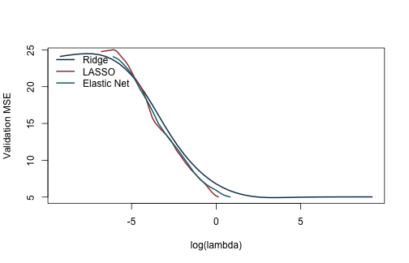
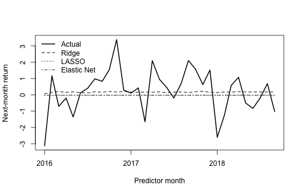

《財務時間序列分析》線上附錄
R13：Ridge、LASSO、Elastic Net 與 post-LASSO
本附錄對應第 17--18 章。目標是以 2007 年 10 月至 2018 年 10 月、共 133 個月的真實日本總體金融凍結快照，預測下一期日本股市報酬，並比較 OLS、Ridge、LASSO、Elastic Net 與 post-LASSO。資料來自原課程的 data_t.csv 與 yield_10.csv；原變數說明記載股價、匯率、工業生產、利率、美股、失業、CPI、M3、WTI、人口結構、外資、貿易與十年期殖利率的單位及季調狀態，但沒有保存原供應者、URL、下載日或 vintage。因此本附錄沿用來源欄位尺度，不把它改稱為可從公開來源完整重建的資料。這是固定時間切分下的預測比較，不識別任何預測變數的因果效果。
執行環境與資料#
- R 4.1 以上；除
knitr負責轉檔外，只使用 base R。 - 資料：
data/processed/japan_monthly_2007_2018.csv。 - 建置紀錄與 MD5：
data/processed/manifest.csv。 - 可從教科書專案根目錄或
online_appendix/knit；資料位置由相對路徑搜尋函數判定。 - 公開界線：repo 隨附作者授權的 processed CSV、程式與執行結果，可離線自含重跑；provider、URL、下載日與 vintage 的缺口仍限制從上游原始來源重建。
knitr::opts_chunk$set(
echo = TRUE,
message = FALSE,
warning = FALSE,
fig.width = 7,
fig.height = 4.5
)
set.seed(20260716)
locate_project_file <- function(relative_path) {
candidates <- c(
relative_path,
file.path("..", relative_path),
file.path("../..", relative_path)
)
hit <- candidates[file.exists(candidates)]
if (length(hit) == 0L) stop("找不到專案檔案：", relative_path)
normalizePath(hit[1], mustWork = TRUE)
}
data_path <- locate_project_file(
"data/processed/japan_monthly_2007_2018.csv"
)
manifest_path <- locate_project_file("data/processed/manifest.csv")
manifest <- read.csv(manifest_path, stringsAsFactors = FALSE)
jp <- read.csv(data_path, stringsAsFactors = FALSE, check.names = FALSE)
jp$date <- as.Date(jp$date)
jp <- jp[order(jp$date), ]
stopifnot(nrow(jp) == 133L, ncol(jp) == 30L)
manifest[grepl("japan_monthly", manifest$file), ]
## file rows columns
## 8 data/processed/japan_monthly_2007_2018.csv 133 30
## md5
## 8 46b39f6fdde5d581ad31c83348d99933
## description
## 8 Japanese monthly macro-finance panel with 10-year government yield
## built_at
## 8 2026-07-16 09:57:40 UTC
data.frame(
first_month = min(jp$date),
last_month = max(jp$date),
months = nrow(jp),
observation_unit = "monthly Japan macro-finance observation",
return_unit = "source-file scale; not independently relabelled"
)
## first_month last_month months observation_unit
## 1 2007-10-01 2018-10-01 133 monthly Japan macro-finance observation
## return_unit
## 1 source-file scale; not independently relabelled
建立可實現的下一期 target#
第 \(t\) 月的預測變數只能預測第 \(t+1\) 月的 return_j。日期、當期目標與下一期才會知道的值不進入預測變數矩陣。缺值列在完成時間對齊後一次處理。
jp$target_next <- c(jp$return_j[-1], NA_real_)
predictor_names <- setdiff(
names(jp),
c("date", "return_j", "target_next")
)
model_df <- jp[, c("date", "target_next", predictor_names)]
model_df <- model_df[complete.cases(model_df), ]
X_raw <- as.matrix(model_df[, predictor_names])
storage.mode(X_raw) <- "double"
y <- model_df$target_next
dates <- model_df$date
c(observations = length(y), predictors = ncol(X_raw))
## observations predictors
## 131 28
head(data.frame(predictor_month = dates, target_next = y), 3)
## predictor_month target_next
## 1 2007-11-01 0.1385835
## 2 2007-12-01 -4.5285968
## 3 2008-01-01 -1.0026484
只由訓練資料估計前處理#
prep_x <- function(X_train, X_new = NULL) {
mu <- colMeans(X_train)
s <- apply(X_train, 2, sd)
keep <- is.finite(s) & s > 1e-10
X_train_s <- sweep(sweep(X_train[, keep, drop = FALSE], 2, mu[keep]),
2, s[keep], "/")
ans <- list(
train = X_train_s,
mean = mu[keep],
sd = s[keep],
keep = keep
)
if (!is.null(X_new)) {
ans$new <- sweep(sweep(X_new[, keep, drop = FALSE], 2, mu[keep]),
2, s[keep], "/")
}
ans
}
soft_threshold <- function(z, penalty) {
sign(z) * pmax(abs(z) - penalty, 0)
}
三種正則化估計器#
以下目標函數均為
\[ \frac{1}{2n}\lVert y-Xb\rVert_2^2+ \lambda\left\{\alpha\lVert b\rVert_1+ \frac{1-\alpha}{2}\lVert b\rVert_2^2\right\}. \]
fit_ridge <- function(X, y_centered, lambda) {
p <- ncol(X)
solve(crossprod(X) / nrow(X) + lambda * diag(p),
crossprod(X, y_centered) / nrow(X))[, 1]
}
fit_enet_cd <- function(X, y_centered, lambda, alpha = 1,
max_iter = 5000L, tol = 1e-8) {
n <- nrow(X)
p <- ncol(X)
beta <- numeric(p)
residual <- y_centered
x2 <- colSums(X^2) / n
for (iter in seq_len(max_iter)) {
beta_old <- beta
for (j in seq_len(p)) {
residual <- residual + X[, j] * beta[j]
z <- sum(X[, j] * residual) / n
beta[j] <- soft_threshold(z, lambda * alpha) /
(x2[j] + lambda * (1 - alpha))
residual <- residual - X[, j] * beta[j]
}
if (max(abs(beta - beta_old)) < tol) break
}
attr(beta, "iterations") <- iter
beta
}
predict_scaled <- function(X_train, y_train, X_new,
lambda, method, alpha = 1) {
pp <- prep_x(X_train, X_new)
y_bar <- mean(y_train)
yc <- y_train - y_bar
beta <- switch(
method,
ridge = fit_ridge(pp$train, yc, lambda),
enet = fit_enet_cd(pp$train, yc, lambda, alpha)
)
list(
pred = as.numeric(y_bar + pp$new %*% beta),
beta = beta,
names = colnames(pp$train),
y_bar = y_bar,
prep = pp
)
}
依時間排序的驗證折#
最末 25% 留作最終測試集。前 75% 內使用展開視窗；沒有任何月份被隨機洗牌。
n <- length(y)
test_start <- floor(0.75 * n) + 1L
idx_tv <- seq_len(test_start - 1L)
idx_test <- test_start:n
validation_size <- 8L
first_train <- max(45L, floor(0.55 * length(idx_tv)))
train_ends <- unique(as.integer(seq(
first_train,
length(idx_tv) - validation_size,
length.out = 4
)))
folds <- lapply(train_ends, function(e) {
list(train = seq_len(e), validation = (e + 1L):(e + validation_size))
})
data.frame(
train_end = dates[vapply(folds, function(z) max(z$train), integer(1))],
validation_start = dates[vapply(folds, function(z) min(z$validation), integer(1))],
validation_end = dates[vapply(folds, function(z) max(z$validation), integer(1))]
)
## train_end validation_start validation_end
## 1 2012-03-01 2012-04-01 2012-11-01
## 2 2013-03-01 2013-04-01 2013-11-01
## 3 2014-03-01 2014-04-01 2014-11-01
## 4 2015-04-01 2015-05-01 2015-12-01
調校 \(\lambda\) 與 \(\alpha\)#
LASSO 與 Elastic Net 的網格分別從「所有斜率恰為零」的門檻
lambda_max / alpha 向下延伸三個數量級；Ridge 的網格則涵蓋八個數量級。
每一折都重新估計中心與尺度。把零係數門檻明列為端點，可分辨資料真的偏好
只有截距的預測，或只是調校網格沒有包住最小值。
lambda_max_by_fold <- vapply(folds, function(fold) {
pp <- prep_x(X_raw[fold$train, , drop = FALSE])
yy <- y[fold$train]
max(abs(crossprod(pp$train, yy - mean(yy)))) / length(yy)
}, numeric(1))
lambda_max <- max(lambda_max_by_fold)
lambda_lasso <- exp(seq(
log(lambda_max), log(lambda_max * 0.001), length.out = 40
))
elastic_alpha <- 0.5
lambda_elastic <- exp(seq(
log(lambda_max / elastic_alpha),
log(lambda_max / elastic_alpha * 0.001),
length.out = 40
))
lambda_ridge <- exp(seq(log(1e-4), log(1e4), length.out = 49))
cv_loss <- function(lambda_grid, method, alpha = 1) {
out <- matrix(NA_real_, nrow = length(folds), ncol = length(lambda_grid))
for (v in seq_along(folds)) {
tr <- folds[[v]]$train
va <- folds[[v]]$validation
for (j in seq_along(lambda_grid)) {
fit <- predict_scaled(
X_raw[tr, , drop = FALSE], y[tr],
X_raw[va, , drop = FALSE],
lambda = lambda_grid[j], method = method, alpha = alpha
)
out[v, j] <- mean((y[va] - fit$pred)^2)
}
}
colMeans(out)
}
loss_ridge <- cv_loss(lambda_ridge, "ridge")
loss_lasso <- cv_loss(lambda_lasso, "enet", alpha = 1)
loss_enet <- cv_loss(lambda_elastic, "enet", alpha = elastic_alpha)
best_ridge <- lambda_ridge[which.min(loss_ridge)]
best_lasso <- lambda_lasso[which.min(loss_lasso)]
best_enet <- lambda_elastic[which.min(loss_enet)]
data.frame(
model = c("Ridge", "LASSO", "Elastic Net"),
lambda = c(best_ridge, best_lasso, best_enet),
validation_mse = c(min(loss_ridge), min(loss_lasso), min(loss_enet)),
grid_location = c(
"interior",
if (which.min(loss_lasso) == 1L) "zero-slope threshold" else "interior",
if (which.min(loss_enet) == 1L) "zero-slope threshold" else "interior"
)
)
## model lambda validation_mse grid_location
## 1 Ridge 31.622777 4.922462 interior
## 2 LASSO 1.138271 5.025106 zero-slope threshold
## 3 Elastic Net 2.276542 5.025106 zero-slope threshold
stopifnot(which.min(loss_ridge) %in% 2:(length(lambda_ridge) - 1L))
Ridge 的最小值落在擴大網格內部。LASSO 與 Elastic Net 則選到各自的
zero-slope threshold：這個上端點是依所有驗證折中最大的零係數門檻建立，
再增大 \(\lambda\) 也只會維持全部斜率為零。因此這兩個邊界解表示驗證資料
偏好只有截距的預測，不是網格仍未向上延伸的未解問題。
plot(log(lambda_ridge), loss_ridge, type = "l", lwd = 2,
xlab = "log(lambda)", ylab = "Validation MSE", col = "#173B57")
lines(log(lambda_lasso), loss_lasso, lwd = 2, col = "#A34045")
lines(log(lambda_elastic), loss_enet, lwd = 2, col = "#1D6D73")
legend("topleft", c("Ridge", "LASSO", "Elastic Net"),
col = c("#173B57", "#A34045", "#1D6D73"), lwd = 2, bty = "n")

在完全未見的測試期間比較模型#
X_tv <- X_raw[idx_tv, , drop = FALSE]
y_tv <- y[idx_tv]
X_test <- X_raw[idx_test, , drop = FALSE]
y_test <- y[idx_test]
ridge <- predict_scaled(X_tv, y_tv, X_test, best_ridge, "ridge")
lasso <- predict_scaled(X_tv, y_tv, X_test, best_lasso, "enet", alpha = 1)
enet <- predict_scaled(
X_tv, y_tv, X_test, best_enet, "enet", alpha = elastic_alpha
)
# 以 QR pivot 選出線性獨立欄，再估計一個明確、可重現的降秩 OLS。
# 在秩虧設計下，完整係數向量不唯一；此基準不作結構性係數解讀。
rank_reduced_ols_predict <- function(X_train, y_train, X_new,
tolerance = 1e-8) {
X_train <- cbind(Intercept = 1, as.matrix(X_train))
X_new <- cbind(Intercept = 1, as.matrix(X_new))
qrx <- qr(X_train, tol = tolerance, LAPACK = FALSE)
keep <- sort(qrx$pivot[seq_len(qrx$rank)])
fit <- lm.fit(X_train[, keep, drop = FALSE], y_train)
prediction <- as.numeric(
X_new[, keep, drop = FALSE] %*% fit$coefficients
)
stopifnot(all(is.finite(prediction)))
list(
pred = prediction,
rank = qrx$rank,
columns = ncol(X_train),
kept = colnames(X_train)[keep],
dropped = setdiff(colnames(X_train), colnames(X_train)[keep])
)
}
ols <- rank_reduced_ols_predict(X_tv, y_tv, X_test)
ols_pred <- ols$pred
data.frame(
benchmark = "QR rank-reduced OLS",
design_columns = ols$columns,
numerical_rank = ols$rank,
dropped_columns = length(ols$dropped)
)
## benchmark design_columns numerical_rank dropped_columns
## 1 QR rank-reduced OLS 29 28 1
# post-LASSO：先選，再在相同 training+validation 上重新 OLS。
selected <- which(abs(lasso$beta) > 1e-8)
if (length(selected) == 0L) {
post_pred <- rep(mean(y_tv), length(y_test))
post_rank <- 1L
} else {
pp_final <- lasso$prep
post_fit <- rank_reduced_ols_predict(
pp_final$train[, selected, drop = FALSE],
y_tv,
pp_final$new[, selected, drop = FALSE]
)
post_pred <- post_fit$pred
post_rank <- post_fit$rank
}
pred <- data.frame(
date = dates[idx_test],
actual = y_test,
HistoricalMean = rep(mean(y_tv), length(y_test)),
OLS_QR = ols_pred,
Ridge = ridge$pred,
LASSO = lasso$pred,
ElasticNet = enet$pred,
PostLASSO = post_pred
)
stopifnot(all(vapply(
pred[setdiff(names(pred), "date")],
function(x) all(is.finite(x)),
logical(1)
)))
score <- function(actual, forecast, baseline) {
mse <- mean((actual - forecast)^2)
c(
MSE = mse,
MAE = mean(abs(actual - forecast)),
OOS_R2 = 1 - mse / mean((actual - baseline)^2)
)
}
model_names <- setdiff(names(pred), c("date", "actual", "HistoricalMean"))
metrics <- t(vapply(
model_names,
function(nm) score(pred$actual, pred[[nm]], pred$HistoricalMean),
numeric(3)
))
stopifnot(all(is.finite(metrics)))
round(metrics, 4)
## MSE MAE OOS_R2
## OLS_QR 14.4723 3.3798 -6.8969
## Ridge 1.7429 1.0231 0.0490
## LASSO 1.8327 1.0738 0.0000
## ElasticNet 1.8327 1.0738 0.0000
## PostLASSO 1.8327 1.0738 0.0000
coef_table <- data.frame(
predictor = lasso$names,
lasso = lasso$beta,
elastic_net = enet$beta
)
coef_table <- coef_table[order(abs(coef_table$lasso), decreasing = TRUE), ]
head(coef_table, 12)
## predictor lasso elastic_net
## 1 spj 0 0
## 2 rer 0 0
## 3 rer_change 0 0
## 4 ipi 0 0
## 5 ipi_change 0 0
## 6 inr 0 0
## 7 inr_change 0 0
## 8 spf 0 0
## 9 return_f 0 0
## 10 unr 0 0
## 11 unr_change 0 0
## 12 cpi 0 0
cat("LASSO nonzero predictors:", sum(abs(lasso$beta) > 1e-8), "\n")
## LASSO nonzero predictors: 0
matplot(
pred$date,
pred[, c("actual", "Ridge", "LASSO", "ElasticNet")],
type = "l", lty = c(1, 2, 3, 4), lwd = c(2, 1.5, 1.5, 1.5),
col = c("black", "#173B57", "#A34045", "#1D6D73"),
xlab = "Predictor month", ylab = "Next-month return"
)
legend(
"topleft", c("Actual", "Ridge", "LASSO", "Elastic Net"),
lty = c(1, 2, 3, 4), lwd = c(2, 1.5, 1.5, 1.5),
col = c("black", "#173B57", "#A34045", "#1D6D73"), bty = "n"
)

解讀限制#
- 這是小樣本預測示範，不是日本股市風險溢酬的結構估計。
return_j的單位沿用凍結檔；不可與未核對單位的外部報酬直接合併。- 非零 LASSO 係數表示在這個字典、切割與損失下被使用，不等於顯著或因果。
- 測試集沒有參與調校；若看完測試結果後改模型，必須另留新的測試期。
sessionInfo()
## R version 4.5.2 (2025-10-31)
## Platform: aarch64-apple-darwin20
## Running under: macOS Tahoe 26.5.1
##
## Matrix products: default
## BLAS: /System/Library/Frameworks/Accelerate.framework/Versions/A/Frameworks/vecLib.framework/Versions/A/libBLAS.dylib
## LAPACK: /Library/Frameworks/R.framework/Versions/4.5-arm64/Resources/lib/libRlapack.dylib; LAPACK version 3.12.1
##
## locale:
## [1] C.UTF-8/C.UTF-8/C.UTF-8/C/C.UTF-8/C.UTF-8
##
## time zone: Asia/Tokyo
## tzcode source: internal
##
## attached base packages:
## [1] stats graphics grDevices utils datasets methods base
##
## other attached packages:
## [1] tibble_3.3.0 dplyr_1.2.1
##
## loaded via a namespace (and not attached):
## [1] shape_1.4.6.1 gtable_0.3.6 xfun_0.57
## [4] ggplot2_4.0.3 collapse_2.1.7 lattice_0.22-7
## [7] quadprog_1.5-8 vctrs_0.7.2 tools_4.5.2
## [10] Rdpack_2.6.6 generics_0.1.4 curl_7.0.0
## [13] parallel_4.5.2 sandwich_3.1-1 xts_0.14.2
## [16] pkgconfig_2.0.3 gbutils_0.5.1 Matrix_1.7-4
## [19] tidyverse_2.0.0 RColorBrewer_1.1-3 S7_0.2.1
## [22] lifecycle_1.0.5 compiler_4.5.2 farver_2.1.2
## [25] MatrixModels_0.5-4 maxLik_1.5-2.2 textshaping_1.0.5
## [28] codetools_0.2-20 SparseM_1.84-2 quantreg_6.1
## [31] htmltools_0.5.9 glmnet_4.1-10 Formula_1.2-5
## [34] pillar_1.11.1 MASS_7.3-65 plm_2.6-7
## [37] iterators_1.0.14 foreach_1.5.2 nlme_3.1-168
## [40] fracdiff_1.5-4 pls_2.9-0 fBasics_4052.98
## [43] tidyselect_1.2.1 bdsmatrix_1.3-7 digest_0.6.39
## [46] labeling_0.4.3 splines_4.5.2 tseries_0.10-62
## [49] miscTools_0.6-30 fastmap_1.2.0 grid_4.5.2
## [52] colorspace_2.1-2 cli_3.6.5 magrittr_2.0.4
## [55] utf8_1.2.6 survival_3.8-3 withr_3.0.2
## [58] scales_1.4.0 forecast_9.0.2 TTR_0.24.4
## [61] rmarkdown_2.31 quantmod_0.4.29 otel_0.2.0
## [64] timeDate_4052.112 ragg_1.5.2 zoo_1.8-15
## [67] timeSeries_4052.112 fGarch_4052.93 urca_1.3-4
## [70] evaluate_1.0.5 knitr_1.51 rbibutils_2.4.1
## [73] lmtest_0.9-40 rlang_1.1.7 spatial_7.3-18
## [76] Rcpp_1.1.0 glue_1.8.0 R6_2.6.1
## [79] cvar_0.6 systemfonts_1.3.2